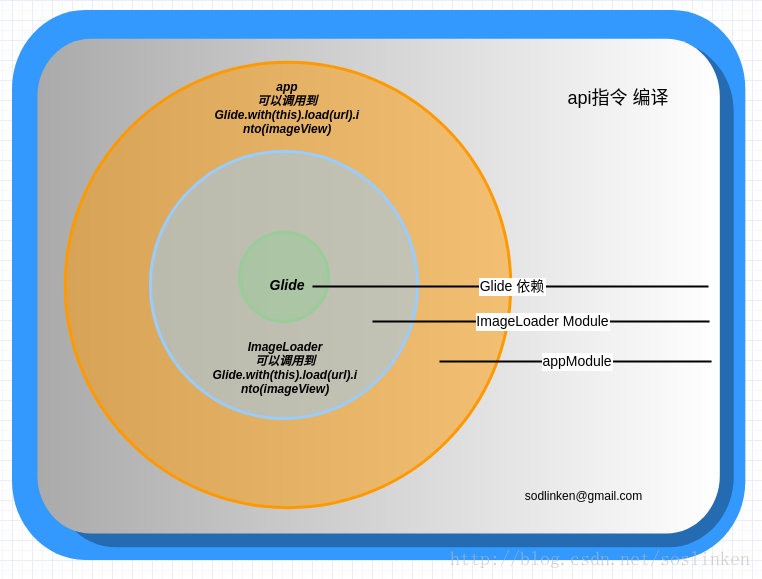
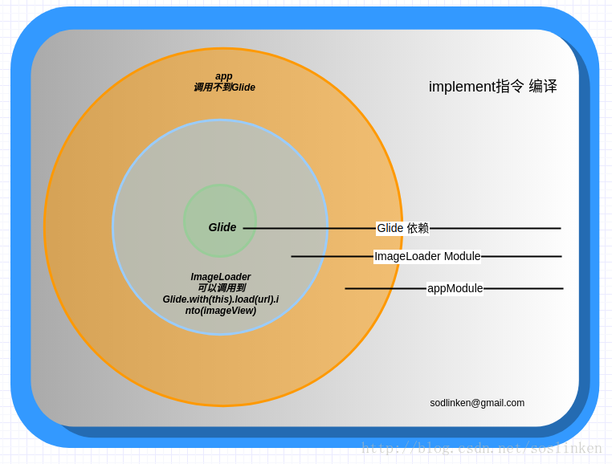

转载请注明来源：http://shicaiD.github.io
前言
今早，惯例打开项目，进入等待(Gradle Build Running...)，完了后又出现warn提示了，好吧，就让我来会会你吧。
|
|
按照提示把Module的build.gradle文件中的compile 替换成implementation就可以了，但是，作为一个好学的程序员(群众:”不要脸”)，怎么能说换就换呢？（比较懒的直接看总结吧）
正文
根据一番google后，发现不仅有implementation还有api配置项，得到以下内容：
博客部分转载
转载于传送门
在com.android.tools.build:gradle 3.0 以下版本依赖在gradle 中的声明写法
|
|
在3.0后compile已经过时了，写法为
|
|
在3.0版本中，compile 指令被标注为过时方法，而新增了两个依赖指令，一个是implement 和api，这两个都可以进行依赖添加，但是有什么区别呢？
api 指令
完全等同于compile指令，没区别，你将所有的compile改成api，完全没有错。

implement指令
这个指令的特点就是，对于使用了该命令编译的依赖，对该项目有依赖的项目将无法访问到使用该命令编译的依赖中的任何程序，也就是将该依赖隐藏在内部，而不对外部公开。

建议
在Google IO 相关话题的中提到了一个建议，就是依赖首先应该设置为implement的，如果没有错，那就用implement，如果有错，那么使用api指令，这样会使编译速度有所增快。
参考官方文档
| 新配置 | 已弃用配置 | 行为 |
|---|---|---|
| implementation | compile | 依赖项在编译时对模块可用，并且仅在运行时对模块的消费者可用。 对于大型多项目构建，使用 implementation 而不是 api/compile 可以显著缩短构建时间，因为它可以减少构建系统需要重新编译的项目量。 大多数应用和测试模块都应使用此配置。 |
| api | compile | 依赖项在编译时对模块可用，并且在编译时和运行时还对模块的消费者可用。 此配置的行为类似于 compile（现在已弃用），一般情况下，您应当仅在库模块中使用它。 应用模块应使用 implementation，除非您想要将其 API 公开给单独的测试模块。 |
使用
implementation的优点（英文好的可以看原文Google）
- 依赖关系不会泄漏到消费者的编译类路径中，所以永远不会意外地依赖于传递依赖项
- 由于减少的类路径大小编译更快
- 当实现依赖关系发生变化时，重新编译会更少：消费者不需要重新编译
- cleaner发布：当与新的maven-publish插件结合使用时，Java库会生成POM文件，这些文件可以精确地区分编译库所需的内容和运行时使用库所需的内容（换句话说，不要混合编译library本身所需的东西，以及编译library所需的东西）
总结
有点晕，还是举个栗子吧
我现在要用PictureSelector这个图片选择框架，同时，当前项目中还需要用到Glide框架，以下是用不同配置项的分别引入依赖框架(
api和compile基本无差异)
implementation123implementation 'com.github.LuckSiege.PictureSelector:picture_library:v2.1.1'implementation 'com.github.bumptech.glide:glide:4.7.0'annotationProcessor 'com.github.bumptech.glide:compiler:4.7.0'
api & compile123api 'com.github.LuckSiege.PictureSelector:picture_library:v2.1.1'或compile 'com.github.LuckSiege.PictureSelector:picture_library:v2.1.1'
以上两种都可以在项目中成功使用PictureSelector 和Glide，在PictureSelector库中build.gradle有这样一句
因此可以知道，使用api & compile可以和PictureSelector一起使用Glide，而implementation对PictureSelector中的Glide隐藏了，因此需要额外引入Glide依赖
以上